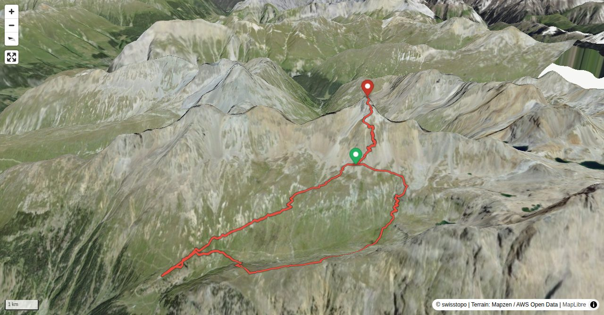

The easy accessibility of the summit and the cabin high up cannot hide the fact that the trail is steep, stony and at times exposed. Thanks to Georgys Hütte it is uncomplicated to experience sunrise and sunset surrounded by majestic mountains. Observing ibex is almost guaranteed.
This beautiful viewpoint is part of Muottas da Puntraschigna and is located vis-à-vis Piz Languard on the other side of Val Bernina. Pontresina railway station – Punt Ota – Tais – P. 2245 (marked white-red-white until here). Continue south-westward on a faint path, then pathless to Muot d’Mez. Descend on the ascent to P. 2245, then turn right and make an arc back to Pontresina. 2 h on the ascent, 1¾ h on the descent, T3.
Quick Facts
| Summit elevation | 3262 m |
|---|---|
| Difficulty | SAC T4- Check the route notes below for terrain and commitment level. Guide |
| Trailhead | Alp Languard (Pontresina) |
| Distance | 8.0 km (out-and-back) |
| Total ascent | ~1009 m |
| Elevation range | 2327-3261 m |
| Route sources | SAC Route Portal |
Photos


All photos: SAC Route Portal
Interactive Route Map
Map tiles: © swisstopo (CC BY 3.0) | © OpenStreetMap contributors | Map library: Leaflet. Route line is approximate — verify against the SAC Route Portal before going.
3D Terrain View

Tiles: © swisstopo (SWISSIMAGE) + AWS Terrain Tiles. Powered by MapLibre GL JS. Open fullscreen ↗
Route Details
South-west face
- TODO: Step 1 description.
- TODO: Step 2 description.
Terrain & safety
The trail to the summit is marked white-red-white. However, the ascent is steep, covered with loose gravel and, on a few metres, fairly exposed. There are some fixed ropes.
Source: SAC Route Portal
Getting There & Back
Start: Alp Languard (Pontresina) (2823 m)
Directions from to Alp Languard (Pontresina)
Route returns to Alp Languard (Pontresina).
Weather Planning
7-day summit forecast (live)
Loading forecast…
Elevation Profile
Computed from the inlined GPX track (elevations from SwissTopo height API).
Field Reference
| Trailhead | Alp Languard (Pontresina) | 46.48470, 9.95000 |
|---|---|---|
| Summit | Piz Languard (3262 m) | 46.48844, 9.95650 |
Coordinates are WGS84 decimal degrees (lat, lon). Emergency: 112 (general) or 1414 (Rega air rescue). Page URL: